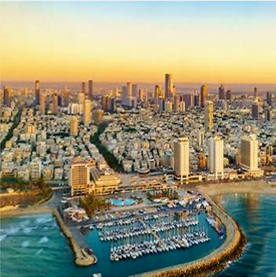

תל אביב-יפו (בערבית: تل أَبيب-يافا), המוכרת לרוב כתל אביב, היא עיר במחוז תל אביב בישראל, במישור החוף הדרומי, המרכזית מבין ערי גוש דן והשנייה בגודל אוכלוסייתה בישראל. תל אביב חברה בארגון פורום ה־15. תל אביב-יפו שוכנת לחוף הים התיכון על אדמת כורכר. בשטחה זורמים נחל הירקון ונחל איילון. היא גובלת ממערב בים התיכון; מדרום בערים בת ים וחולון; ממזרח בערים רמת גן, גבעתיים, בני ברק ופתח תקווה; ומצפון בערים רמת השרון והרצליה.
|  | |
|---|---|